Function assist editor
The item is designed to help users edit function expressions. The visualized Function assist editor allows users to select the desired function, configure its parameters, options, and other information, retrieve data from the database or file, perform a certain operation – grouping, sorting or join, and then output the result data.
Select a target cell, click Function assist editor on the right-click menu to have the following dialog, where you can select a function and configure parameters to help generate a SPL statement, as shown below:

Let°Øs look at how to use the Function assist editor through an example:
Step 1: Create a new .splx file:

Step 2: Edit cell A1 to connect to demo data source:
Select A1, right click to get Function assist editor and enter the following interface. Select cnnect(db) function and set data source name property value as °∞demo°±.

Click °∞OK°± and A1 displays the following expression:
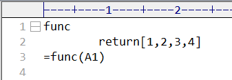
Step 3: Edit cell A2 to retrieve CITIES table from demo data source:
select CID,NAME,POPULATION,STATEID from CITIES where CID<?£¨…Ë÷√≤Œ ˝÷µ£∫200°£Select A2, right click to get Function assist editor and enter the following interface. Select cell A1(DB) and then query(sql) function to edit a SQL query:
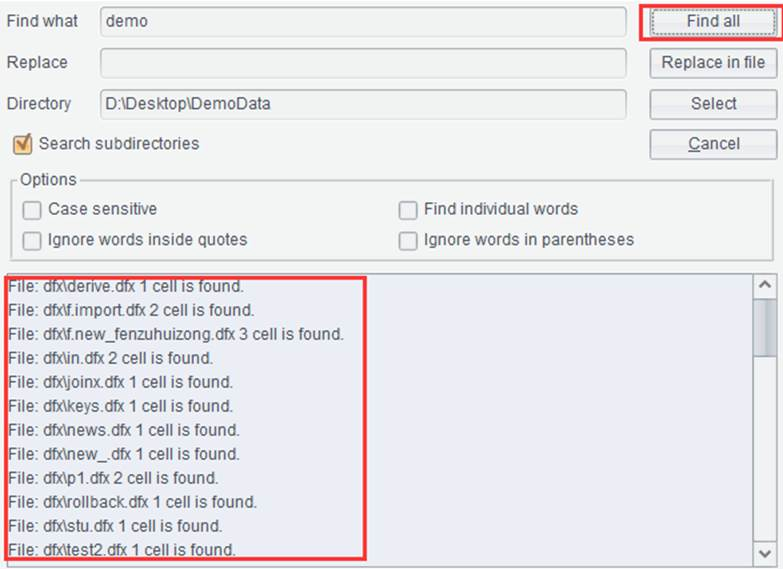
Click °∞OK°± and A2 displays the following query:
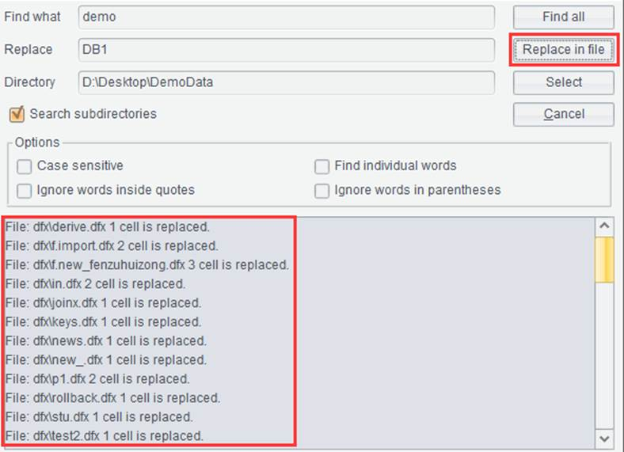
Step 4: Edit cell A3 to group CITIES table by STATEID and sum POPULATION and count CID:
Select A3, right click to get Function assist editor and enter the following interface. Select cell A2(Sequence) and group(x:F,°≠;y:G,°≠) function, edit grouping expression STATEID, renamed STATEID, and edit aggregate expressions sum(POPULATION), renamed Total_POPULATION, and ~.count(CID), renamed Count_city.
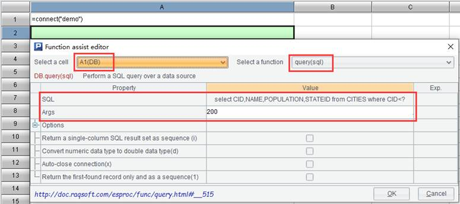
Click °∞OK°± and A3 displays the following statement:
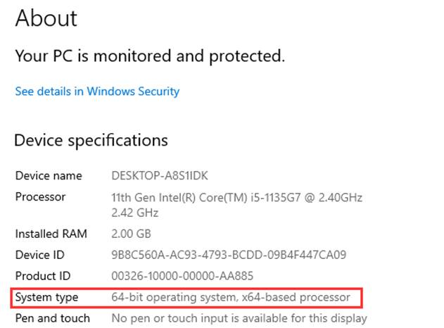
Step5: Edit cell A4 to retrieve STATES table from demo:
Select A4, right click to get Function assist editor and enter the following interface. Select cell A1(DB) and cursor(sql) function to edit SQL query statement select STATEID,NAME,AREA from STATES, and set @x as the option.

Click °∞OK°± and A4 displays the following statement

Step 6: Edit cell A5 to sort STATES table by STATEID.
Select A5, right click to get Function assist editor and enter the following interface. Select cell A4(Cursor) and sortx() function, and configure sorting fields as STATEID.
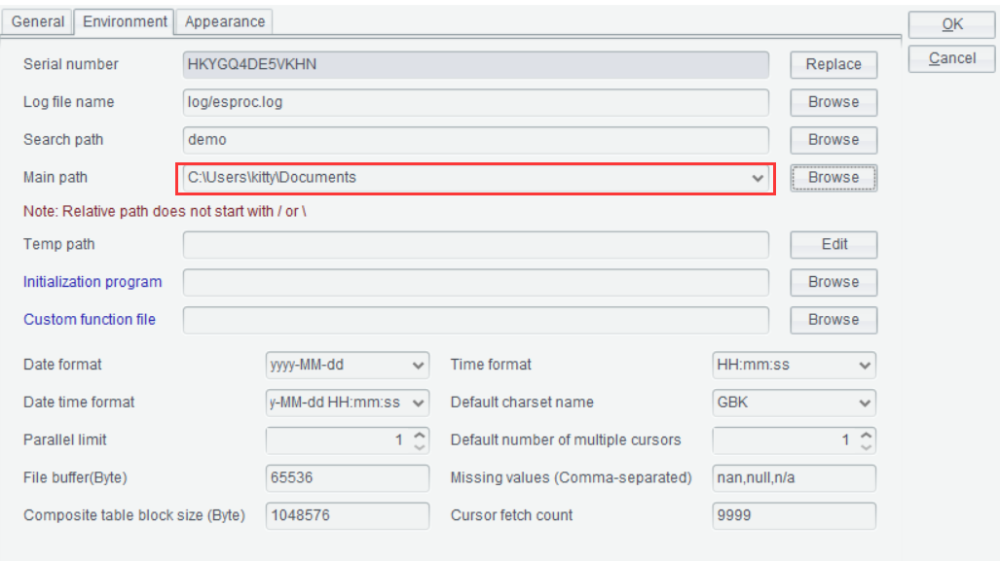
Click °∞OK°± and A5 displays the following statement:

Step 7: Edit cell A6 to join A5°Øs cursor with A3°Øs table sequence through foreign key field STATEID:
Select A6, right click to get Function assist editor and enter the following interface. Select cell A5(Cursor) and join() function, set STATEID as the foreign key field, select A3(Sequence) as the to-be-joined table sequence with STATEID being the joining primary key, edit select expression that uses @i as the option, and set joining type as inner join.
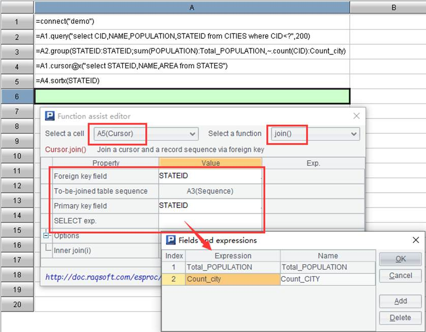
Click °∞OK°± and A6 displays the following statement:
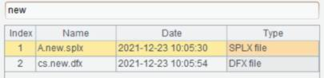
Now data to be written to the file is all prepared and we are read to do the writing.
Step 8: Create data file STSTE.xls:
Select A7, right click to get Function assist edtor and enter the following interface. Select file() function and edit file name as D:/STSTE.xls:
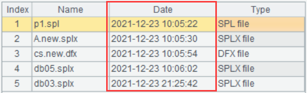
Click °∞OK°± and A7 displays the following statement:
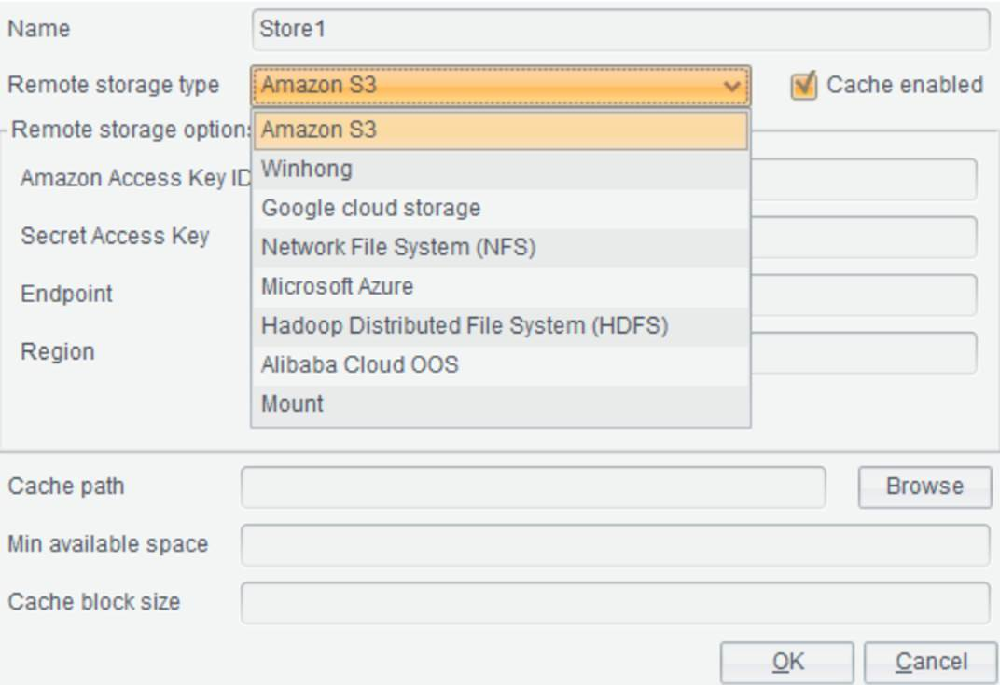
Step 9: Export data of A6°Øs cursor to a targe data file:
Select A8, right click to get Function assist editor and enter the following interface. Select cell A7(File) and xlsexport() function, and choose A6(Cursor) as the to-be-exported table sequence or cursor. Export all fields if the to-be-exported fields are not configured. Use @t option to export the first row as column headers.
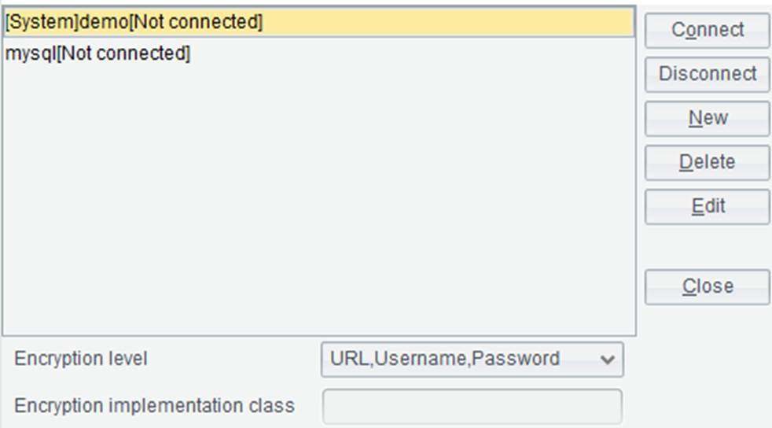
Click °∞OK°± and A8 displays the following statement:
Step 10: Execute script:
Execute the script and an Excel file named STSTE.xls will be generated under D drive. Below is the content of the file:
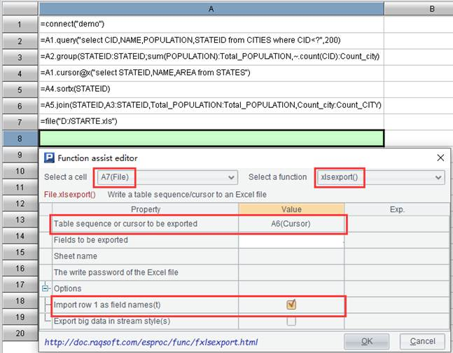
Note:
1. For any selected cell, the function cannot be reedited or reselected after it has been selected, edited, and confirmed unless its content is cleared; but you can reconfigure its parameters and options.
2. If a manually edited cell expression uses a function that is not supported by the function assist feature for the time being, its result cannot be synchronized into the Function assist editor.
3. The function assist feature does not cover all esProc functions. It only supports certain functions related with retrieval, calculation, and export. More functions will be included in the future.